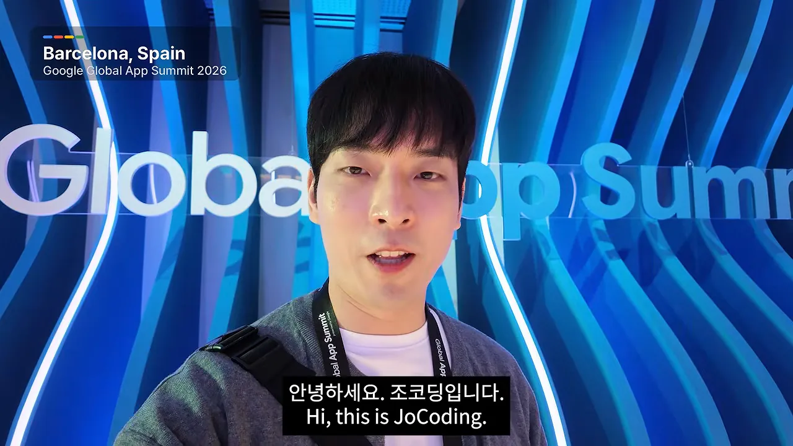
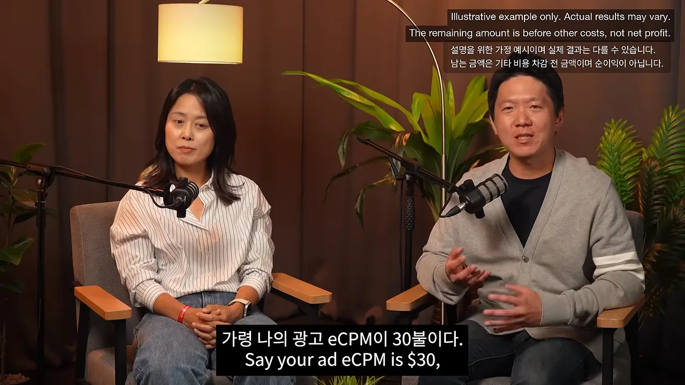

결제하는 사람은 5%도 안 돼요
이 영상은 스페인 바르셀로나에서 열린 구글 행사 현장에서 찍은 대담이에요. 왼쪽 위에 'Barcelona, Spain · Google Global App Summit 2026'이라는 장소 표시가 보여요.

대담 상대는 구글 코리아에서 앱 광고 수익화를 맡은 두 사람이에요. 이름 자막 아래 작은 글씨로 소속과 역할이 붙어 있어요. 김은영 총괄은 '광고 수익화 사업 총괄', 오세준 매니저는 '모바일 앱 광고 수익화'예요. 개발자에게는 애드몹(AdMob)이라는 이름으로 익숙한 조직이에요.
오른쪽에 앉은 사람이 오세준 매니저예요. 이름 자막에 'Google Korea · 모바일 앱 광고 수익화'라고 적혀 있고, 이 대담에서 구체적인 사례와 숫자는 주로 이 사람이 꺼내요.
95%는 한 번도 결제하지 않아요
김은영 총괄은 답부터 말해요. 핵심은 하이브리드 수익화라고요. 한국 사람 스마트폰에는 앱이 100개쯤 깔려 있는데, 앱마다 느끼는 정서적·경제적 애착이 달라요. 그러니 결제든 광고든 한 가지 길만 열어 두면 안 된다는 거예요.
조코딩이 인앱 결제 유저 비율을 10~20%쯤으로 짐작하자, 김은영 총괄은 '훨씬 적다, 5% 미만'이라고 답해요. 그나마 한국 유저는 지불 의향이 높아서 높은 편이에요. 나머지 95%는 한 번도 결제하지 않아요. 이 대목에서 '99% 이상'이라는 말도 한 번 나오는데, 바로 뒤에 95%로 다시 정리돼요.
광고는 두 종류로 나눠 써요
오세준 매니저는 광고를 누가 시점을 정하느냐로 나눠요. 이 구분이 영상 내내 다시 나와요.
| 구분 | 언제 뜨나요 | 예 | 누구에게 |
|---|---|---|---|
| 푸시형 광고 | 개발자가 정한 시점 | 디스플레이 광고, 전면 광고 | 비결제 유저 중심 |
| 보상형 광고 | 유저가 원해서 누를 때 | 광고를 보고 보상 받기 | 결제 유저에게도 일부 |
보상형 광고는 인앱 결제와 성격이 비슷해요. 필요를 느낄 때 결제하듯, 보상이 필요할 때 스스로 광고를 보거든요. 그래서 결제 유저의 경험을 해치지 않아요.
비결제 유저 쪽 사례로 베트남 개발사 Vulcan Labs가 나와요. 이 회사는 '네이티브 전면'이라는 포맷을 도입했어요. 네이티브 광고는 완성된 광고 소재를 그대로 받는 게 아니라, 아이콘·이미지·텍스트 에셋을 화면 어디에 둘지 개발자가 정해요. 이 포맷으로 노출이 크게 늘었고 ARPDAU(Average Revenue Per Daily Active User)가 21% 올랐어요. 조코딩은 광고 수익 10억 원이면 2억 1천만 원이 더 생기는 셈이라고 풀어요.
많이 보여 줄수록 단가가 떨어져요
광고는 같은 유저에게 100번, 200번, 300번 보여 준다고 수익이 그만큼 따라 오르지 않아요. 한 유저에게 노출이 쌓일수록 광고 단가가 떨어져요. 오세준 매니저는 이걸 마트 시식으로 설명해요.
잘 구운 고기 10점이 있다고 해 볼게요. 열 명이 한 점씩 먹고 열 명이 동시에 살지 고민하는 게, 한 명이 열 점을 다 먹고 고민하는 것보다 판매로 이어질 확률이 높아요. 광고도 같아요. 광고비를 내는 광고주는 마케팅 목표를 이루려고 돈을 쓰는데, 그 돈이 한 사람이나 소수에게 몰리는 걸 원하지 않아요. 그래서 소수 유저에게 노출이 쌓이면 단가가 내려가요.
광고를 붙여 본 개발자는 '시간이 지나니 단가가 계속 떨어지는데 뭔가 문제가 있나' 하고 걱정하곤 해요. 그런데 대부분은 이 구조 때문이에요.
광고를 안 보던 사람에게 넓혀요
해결책은 노출을 더 많은 사람에게 퍼뜨리는 거예요. 앱에서 보상형 광고를 보는 사람이 20%라면, 새 지면을 만들거나 새 포맷을 들여와서 광고를 전혀 또는 거의 안 보던 나머지 유저를 끌어오는 걸 고민해요. 앞에서 본 Vulcan Labs의 네이티브 전면이 바로 이런 사례예요.
앱 하나만 운영하고 새 앱 계획도 없다면 유저가 거의 고정돼요. 수익화에는 좋지 않은 상황이에요. 이럴 때는 광고 지면을 적어도 3~6개월마다 조금씩 바꿔 봐요.
- 지면의 위치를 옮겨 봐요.
- 광고가 나오는 흐름에 변화를 줘요.
유저에게 계속 새로운 자극이 들어오게 해서 광고에 눈이 멀지 않게 하는 거예요. 게임이든 아니든 유저가 많은 앱이 쓰는 최적화 기술이라고 해요.
A/B 테스트로 하나씩 고정해 나가기
김은영 총괄은 떠오르는 의문이 전부 A/B 테스트 시나리오가 될 수 있다고 말해요. 오세준 매니저가 캐주얼 게임사를 예로 들어요.
스테이지 10을 넘어갈 때마다 유저 30% 이상이 떠나요. 마침 그 자리에 전면 광고가 있어요. 그러면 '전면 광고 때문인가?'라는 의문이 생기죠. 북미 상위 앱사들은 이걸 감으로 판단하지 않고 그룹을 나눠 시험해요.
| 그룹 | 스테이지 10의 전면 광고 |
|---|---|
| 그룹 1 | 없앰 |
| 그룹 2 | 하루 2번 |
| 그룹 3 | 하루 4번 |
| 그룹 4 | 이틀에 1번 |
영상은 4~5개 그룹이라고 말하고 그중 네 가지를 예로 들어요. 이렇게 2~3주를 충분히 돌린 뒤 볼 것은 세 가지예요. 유저 리텐션, 수익화 지표, 유료 마케팅을 한다면 그 지표예요. 이걸로 시나리오별 ROAS(Return On Ad Spend)와 LTV(Lifetime Value)를 계산해서 어느 안이 가장 수익성이 좋은지 봐요.
flowchart LR A["의문: 전면 광고 때문에 떠날까?"] --> B["유저를 4~5개 그룹으로"] B --> C["2~3주 운영"] C --> D["리텐션·수익·마케팅 지표로 ROAS·LTV 계산"] D --> E["가장 좋은 안을 기본값으로"] E -->|다음 의문을 가설로| A
가장 성과가 좋은 안이 기본값이 되고, 그 상태로 운영하다 생기는 새 의문을 다시 가설로 세워 시험해요. 한 미국 회사는 이걸 꾸준히 하다 보면 1년이 지나 있더라고 했대요.
실험 설계를 에이전트에게 맡기면
조코딩은 이 설계와 반복을 이제 AI(Artificial Intelligence) 에이전트에게 시킬 수 있지 않겠냐고 물어요. 김은영 총괄도 그럴 거라 예상하고, 운영 손이 줄면 짧은 기간에 더 많은 테스트를 할 수 있을 거라고 기대해요.
그가 최근 만난 유럽 개발사 대표 이야기도 나와요. 엔지니어 출신이 아니라 예전에는 직원에게 '이거 되지 않냐'고 말로 부탁하고 기다렸는데, 이제는 바이브 코딩과 AI 에이전트로 직접 실험을 돌리고 다음 날 아침 결과를 본대요.
AI 앱의 API 비용, 광고로 메울 수 있을까요?
요즘 많이 만드는 AI 앱은 Gemini 같은 모델 API(Application Programming Interface)를 부를 때마다 토큰 비용이 나가요. 광고 수익이 그보다 커야 앱을 만들 의미가 있어요. 조코딩은 이걸 어떻게 설계해야 하고, 복잡한 인프라가 필요한지 물어요.
오세준 매니저의 첫 답은 '유저 한 명이 하루에 평균 얼마를 벌어 주는지부터 확인하라'예요. 그러려면 트래픽을 추적하고 이해하고 있어야 해요. 결제 유저를 빼고 광고로만 수익을 내는 유저를 보면, 결국 모든 게 유저 LTV에 달려 있어요.
- 결제할 것 같은 상위 2~3% 유저에게는 화면 전환 때 나오는 광고를 건너뛰게 해요.
- 결제 가능성이 낮은 유저에게는 광고를 많이 보여 주는 게 이득이에요. 다만 어디까지가 적정한지는 테스트로 찾아요.
숫자로 따져 본 손익분기점
오세준 매니저가 든 예시예요. 이 장면 오른쪽 위에는 '설명을 위한 가정 예시이며 실제 결과는 다를 수 있다, 남는 금액은 기타 비용 차감 전 금액이며 순이익이 아니다'라는 안내 문구가 영어와 한국어로 떠 있어요.

AI 응답을 5번 만드는 데 토큰 비용이 1.5센트 든다고 해요. 광고 eCPM이 30달러면 광고 한 번에 3센트예요. 광고 일치율이 95%면 실제로는 약 2.85센트가 들어와요. 2.85센트에서 API 비용 1.5센트를 빼면 1.35센트가 남으니, 유효한 비즈니스로 볼 수 있다는 거예요.
그러니 시작점은 두 숫자예요. AI 토큰에 얼마를 쓰는지, 그리고 지금 얼마를 벌고 있는지요. 여기서부터 최적화를 해 나가요.
필요한 건 SDK 두 개
그럼 인프라는 개발자가 직접 만들어야 할까요? 오세준 매니저의 답은 SDK 두 개면 된다는 거예요.
| 무엇을 | 필요한 SDK |
|---|---|
| 광고 수익화 | 애드몹 SDK |
| 유저 데이터 분석 | 파이어베이스 애널리틱스 SDK |
| 앱 업데이트 없이 유저별로 다른 시나리오 시험 | 파이어베이스 리모트 컨피그 |
리모트 컨피그는 '원격 제어'라고 보면 된다고 해요. 결국 애드몹과 파이어베이스, 두 SDK를 심으면 끝이에요. 개발자라면 일주일 안에 충분하고, 가장 빠른 사람은 반나절 만에 붙였대요. 조코딩은 바이브 코딩이면 30분~1시간이면 되지 않겠냐고 웃어요.
몰입을 깨지 않는 새 광고 포맷
전면 광고를 너무 자주 띄우면 앱을 지우게 된다는 조코딩의 말에, 김은영 총괄은 흔한 오해부터 짚어요. 유저가 무조건 광고를 싫어한다고들 생각하지만, 실제로 싫어하는 건 광고보다 타이밍이라는 거예요.
몰입해서 콘텐츠를 보거나 게임을 하는데 전면 광고가 갑자기 화면을 덮으면 그게 최악이에요. 그래서 몰입을 방해하지 않는 새 포맷들이 나오고 있고, 구글도 이 방향에 투자하고 있다고 해요.
이미 아는 포맷과 새 포맷
오세준 매니저는 디스플레이 배너, 전면 광고, 리워드, 비디오는 이미 잘 알려져 있다고 하고, 새로 나온 두 가지를 소개해요. 화면 자료 없이 말로만 설명해서, 설명대로 그려 봤어요.
| 포맷 | 영상의 설명 |
|---|---|
| 픽처인픽처(PiP) | 유튜브를 보다 홈으로 나가면 영상이 작은 창으로 떠 있듯, 광고가 그렇게 떠요. 콘텐츠를 계속 보면서 방해를 줄여요. |
| 스퀴즈백 | 전면처럼 뜨지만 곧바로 '쭉 짜서' 최소화할 수 있어요. 조코딩이 본 데모에서는 기존 화면이 그대로 살짝 줄어들고 주변 경계에만 광고가 떴어요. |
조코딩은 앱 사용 경험을 그대로 두면서 광고 수익을 얻을 수 있으니, 개발자라면 거의 무조건 도입해야겠다는 생각이 들었다고 해요. 두 사람의 요지도 같아요. 유저가 콘텐츠를 즐기는 경험을 최대한 지키면서 그 안에서 광고 비즈니스를 만들자는 거예요.
글로벌 시장에서는 더 과감해도 돼요
한국 개발자가 글로벌 유저를 겨냥할 때, 해외 광고를 받으려면 해외 사업자를 내야 할까요? 김은영 총괄의 답은 '전혀 필요 없다'예요. 애드몹 SDK 하나만 넣으면 전 세계 유저를 대상으로 광고가 나가요. 오세준 매니저도 구글 GMA(Google Mobile Ads) SDK 하나면 유저가 한국에 있든 미국에 있든 알아서 광고가 송출된다고 덧붙여요.
그 대신 시간을 쓸 곳은 따로 있어요. 여러 나라 유저가 앱을 사랑하게 만들고, 리포팅 대시보드를 보며 무엇을 고쳐야 유저가 다시 찾아올지 고민하는 일이에요. 조코딩은 이걸 '광고는 구글에 맡기고 앱의 본질에 집중하는 환경'이라고 정리해요.
한국 퍼블리셔는 광고에 보수적이에요
오세준 매니저가 몇 년간 한국 퍼블리셔와 일하며 느낀 점이에요. 아이디어가 좋고 콘텐츠에서는 선택과 집중을 잘하는데, 수익화로 넘어가면 확 보수적으로 바뀐대요. 전면 광고를 하루 1회에서 2회로 늘려도 괜찮아 보이는데, 시험해 볼 엄두를 내지 않거나 '그렇게까지 해야 하나'에서 멈춘다는 거예요.
글로벌 시장에 나가면 그 시장을 노리는 수많은 퍼블리셔와 경쟁하게 돼요. 그래서 기술 구현보다 마인드셋을 바꿔 조금 더 공격적으로 가 보라고 권해요. 한국 유저는 광고에 특히 민감한 편이지만, 해외에는 '광고 덕분에 무료로 쓰는 거 알고 있으니 앞으로 응원할게'라는 스토어 리뷰를 남기는 유저도 많대요.
김은영 총괄도 해외 이야기를 더해요. 국내 유저는 IAP(In-App Purchase) 지불 의향이 높지만, 해외로 나가면 한국만큼 결제하지 않아요. GDP(Gross Domestic Product) 상위 일부 나라를 빼면 결제 유저 비율이 굉장히 낮아요. 대신 인도·인도네시아처럼 인구가 많은 곳은 단가가 낮아도 노출이 엄청나게 나와요. 그래서 나라마다 전략을 달리 가져가야 하고, 광고 빈도를 어디까지 올려도 되는지 그 임계점을 나라별로 확인하라고 해요.
광고 횟수는 어떻게 늘리나요
방법은 광고 종류에 따라 두 가지예요.
| 광고 종류 | 횟수를 바꾸는 곳 |
|---|---|
| 디스플레이·전면처럼 퍼블리셔가 정한 순간에 뜨는 광고 | 코드. '이런 조건에서 이 화면에 오면 광고를 보여 줘'를 하드코딩해요 |
| 보상형 광고 | 애드몹 프런트엔드 콘솔. 사용자당 하루 프리퀀시 캡을 2회, 3회처럼 설정해요 |
유저마다 광고 경험을 세밀하게 맞추려면 결국 코딩이 따라와요. 조코딩은 이것도 이제 AI에게 '횟수 좀 늘려 줘'라고 맡길 수 있겠다고 하고, 오세준 매니저도 동의해요.
에이전트 시대, 개발자가 할 일
조코딩이 마지막 기술 질문을 던져요. 나라별 최적화 같은 건 SDK만 넣으면 알아서 되나요? 오세준 매니저는 기본 최적화는 돌아가지만, 고급 최적화는 시간을 들여야 한다고 답해요.
조코딩은 업데이트 내용을 미리 들었다며 애드몹 관련 스킬도 나왔다고 말해요. 그런 스킬을 에이전트에 꽂으면 내 데이터를 분석하고 나라별로 광고를 맞추는 일까지 맡길 수 있지 않겠냐는 거예요. 두 사람은 가능해질 거라고 답해요. 예전에 고민해서 직접 코딩하던 일을 에이전트에 넘기면 운영 비용이 줄고, 같은 시간에 더 많은 테스트를 할 수 있다는 거예요.
두 사람의 마무리 조언
사이드 프로젝트로 앱을 만드는 1인 개발자에게 줄 팁을 묻자, 두 사람은 서로 다른 쪽을 짚어요.
김은영 총괄은 경험을 말해요. 의외의 답일 수 있다며, 수익화는 구글과 AI가 다 돕겠다고 해요. 대신 개발자는 유저에게 어떤 경험을 주고 싶은지 날카롭게 고민하라고 해요. 앱 개발이 쉬워지면서 경쟁 서비스가 너무 많아졌고, 유저 눈높이는 하늘을 찔러요. 코딩이 쉬워졌다고 모든 게 자동으로 되는 시대는 아니라는 거예요.
오세준 매니저는 실행을 말해요. 한국 개발사는 실패를 더 두려워하는 경향이 보인대요. 시나리오를 시험했다가 유저가 좀 떠난다고 꼭 망하는 건 아니에요. 작은 트래픽이라도 실제로 시험하고, 결과를 보고, 단계별로 업데이트하라고 해요. AI 덕분에 개발 속도가 빨라져서 속도 경쟁이 됐다는 게 근거예요.
2년 전에 내가 한 달 고민하고 한 달 개발해서 출시하는게 지금은 누군가에게는 3일 고민하고 3일 테스트해 보고 3일 업데이트하고 계속 발전해 나갈 수 있거든요.
— 영상 25:59
조코딩은 대담에서 가장 인상적이었던 점으로, 한국 개발자가 유저 이탈을 걱정해 광고 수익화를 주저한다는 이야기를 꼽아요. 그리고 처음부터 거창하게 생각할 필요 없이 파이어베이스와 애드몹 SDK를 붙이고 여러 시도를 해 보라는 말로 대담을 마쳐요.